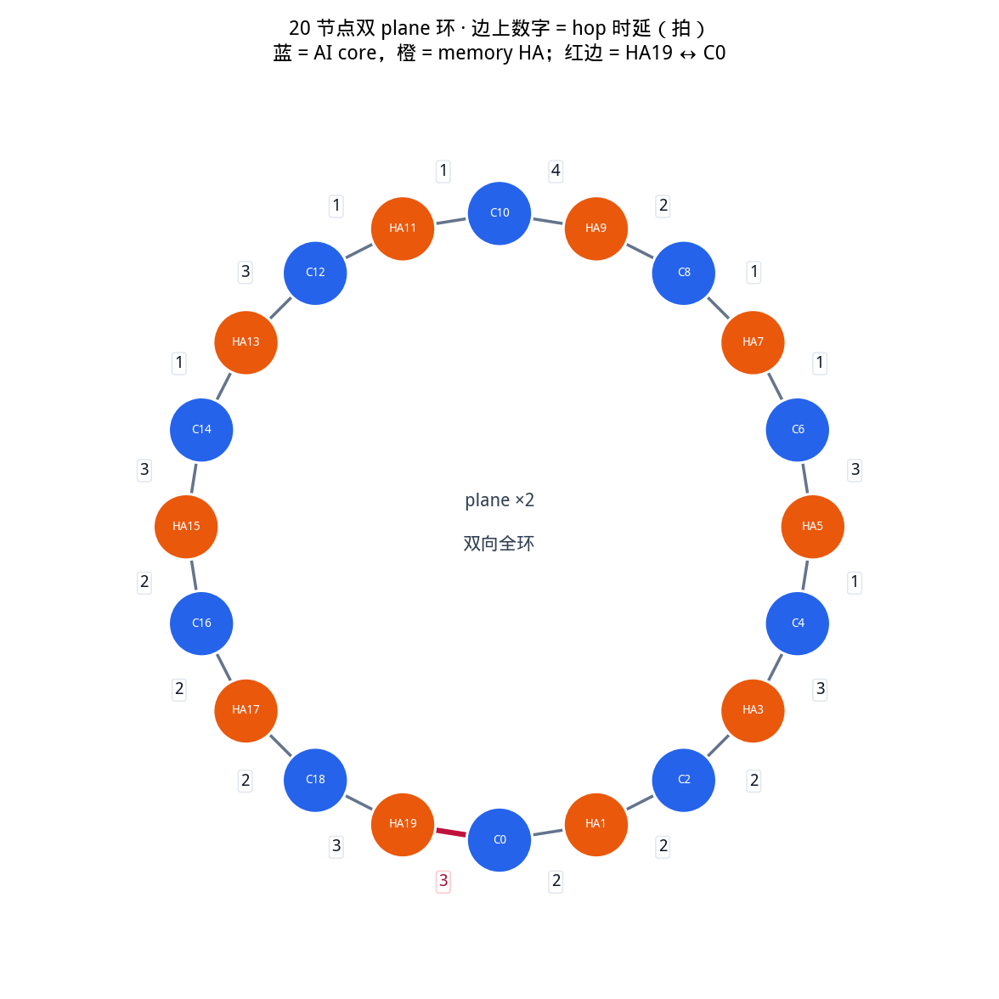
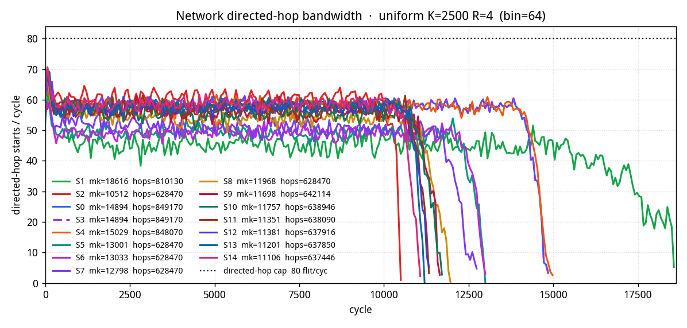
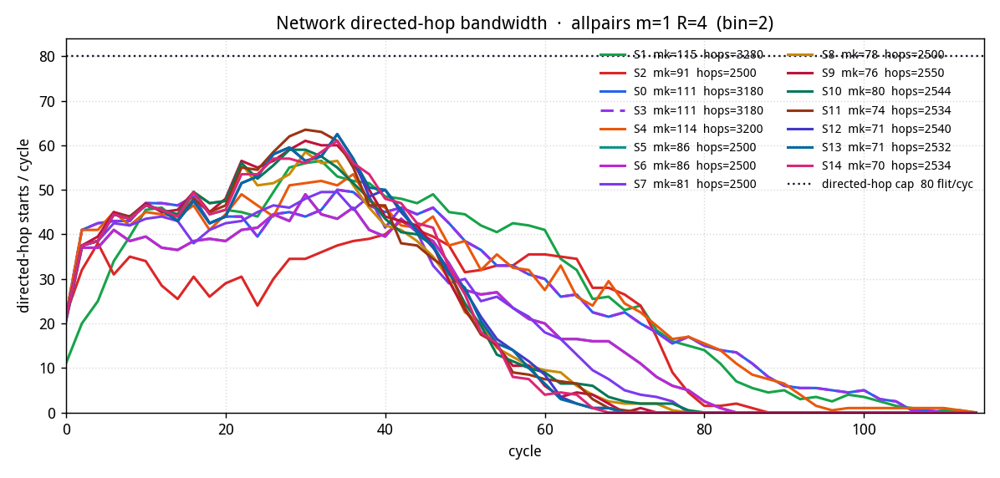

偶数 index 是 AI core，奇数是 memory Home Agent。两个独立的双向 ring plane；每节点每 plane 一个端口，plane 内两个方向共用该端口的 buffer。 流量是读往返（请求 1 flit，响应 R flit）。makespan = 最后一个响应 flit 在发起 core 处被 drain 的那一拍。
20 个节点围成一个双向全环；两个 ring plane 共用同一套几何。边上的数字是 该无向边的 hop 时延（拍），两个方向相同。节点按 index 顺时针 递增（+1 = CW）。红色边是 mem HA19 与 core 0 之间的闭合边，时延 3 拍。路由仍按跳数最短路（跳数平局走 CW）， 飞越时间是路径上各边时延之和，不再是统一的 2 拍。

按边序 i → (i+1) mod 20 的时延：
2, 2, 2, 3, 1, 3, 1, 1, 2, 4, 1, 1, 3, 1, 3, 2, 2, 2, 3, 3。最后一项是 HA19 ↔ C0。
| 无向边 | 时延（拍） | |
|---|---|---|
| C0 — HA1 | 2 | |
| HA1 — C2 | 2 | |
| C2 — HA3 | 2 | |
| HA3 — C4 | 3 | |
| C4 — HA5 | 1 | |
| HA5 — C6 | 3 | |
| C6 — HA7 | 1 | |
| HA7 — C8 | 1 | |
| C8 — HA9 | 2 | |
| HA9 — C10 | 4 | |
| C10 — HA11 | 1 | |
| HA11 — C12 | 1 | |
| C12 — HA13 | 3 | |
| HA13 — C14 | 1 | |
| C14 — HA15 | 3 | |
| HA15 — C16 | 2 | |
| C16 — HA17 | 2 | |
| HA17 — C18 | 2 | |
| C18 — HA19 | 3 | |
| HA19 — C0 | 3 | ← mem HA19 ↔ C0 |
下界是可达性的必要条件，用来判断一个方案离物理极限还有多远，而不是宣称 某个值可达。所有下界都来自「某个资源必须搬运的总量 ÷ 该资源的容量」这一类 计数论证，因此对任何调度策略都成立，包括离线最优。
N = 20 节点 · P = 2 个 plane ·
σ = 1 拍/flit（同一有向段上连续两个 flit 的最小间隔）·
λ(u,v) = 相邻无向边 hop 时延（1–4 拍，见图）·
有向段总数 2PN = 80T；每个 t ∈ T 是 core→HA 的
m_req flit 请求，加 HA→core 的 m_resp flit 响应。π_req(t) / π_resp(t) 是取最短方向的路径，
hops(π) 是跳数。
对每条不区分 plane 的有向邻接 (u,v)，统计必须穿过它的
flit 总数
L(u,v) = Σ_t m_req·[⟨u,v⟩ ∈ π_req(t)]
+ m_resp·[⟨u,v⟩ ∈ π_resp(t)]plane 分配是策略而非物理约束——同一条有向 hop 两个 plane 都能承载，
所以该有向邻接的合并容量是每 σ 拍 P 个 flit：
makespan ≥ LB_link = σ · ⌈ max(u,v) L(u,v) / P ⌉这里必须除以 P。如果改用某个具体
plane_sel 策略下的单 plane 峰值负载，会在仿真器运行时平衡得更好时
反过来高于实测 makespan，那就不是下界了。
对每个节点 n，令 B(n) 为必须在 n
上环的 flit 总数、E(n) 为必须在 n 下环的 flit 总数
（跨 plane 合并，请求与响应合并）。每节点每 plane 各 1 个 inject / eject 端口：
makespan ≥ LB_port = σ · ⌈ maxn
max(B(n), E(n)) / P ⌉环的二等分需要切开两个缺口。取割集
X = {⟨N/2−1, N/2⟩, ⟨N/2, N/2−1⟩, ⟨N−1, 0⟩, ⟨0, N−1⟩}
× P 个 plane，共 |X| = 8 条有向段令 C 为所有路径穿过 X 的 flit-段数总和，则
makespan ≥ LB_cut = σ · ⌈ C / |X| ⌉这里数的是实际穿越次数。core/HA 交错布局下大量路径只有 1 跳，套用「一半流量必然过割」的经验假设会高估到超过实测值。
一个事务内部是严格串行的：请求上环 → 飞越路径各边时延之和
delay(π) →
m_req·σ 拍排空 → HA 服务 t_ha → 响应飞越 →
m_resp·σ 拍排空。取最深的那个事务：
makespan ≥ LB_txn = maxt [ delay(π_req(t))
+ m_req·σ + t_ha + delay(π_resp(t)) + m_resp·σ ]bound = max(LB_link, LB_port, LB_cut, LB_txn)| 项 | 值 | 比值 | |
|---|---|---|---|
| allpairs m=1 R=4 | 100 事务 | ||
| LB_link 段带宽 | 35 | ||
| LB_port 端口 | 20 | ||
| LB_cut 二等分割 | 32 | ||
| LB_txn 单事务串行 | 47 | ← 主导 | |
| bound = max(·) | 47 | ||
| 实测 S0 | 111.0 | 2.36× bound | |
| 实测 S1 | 123.7 | 2.63× bound | |
| 实测 S2 | 91.0 | 1.94× bound | |
| 实测 S3 | 111.0 | 2.36× bound | |
| 实测 S4 | 114.0 | 2.43× bound | |
| 实测 S5 | 86.0 | 1.83× bound | |
| 实测 S6 | 86.0 | 1.83× bound | |
| 实测 S7 | 81.0 | 1.72× bound | |
| 实测 S8 | 78.0 | 1.66× bound | |
| 实测 S9 | 76.0 | 1.62× bound | |
| 实测 S10 | 80.0 | 1.70× bound | |
| 实测 S11 | 74.0 | 1.57× bound | |
| 实测 S12 | 71.0 | 1.51× bound | |
| 实测 S13 | 71.0 | 1.51× bound | |
| 实测 S14 | 70.0 | 1.49× bound | |
| uniform K=2500 R=4 | 25000 事务 | ||
| LB_link 段带宽 | 8939 | ← 主导 | |
| LB_port 端口 | 5168 | ||
| LB_cut 二等分割 | 7788 | ||
| LB_txn 单事务串行 | 47 | ||
| bound = max(·) | 8939 | ||
| 实测 S0 | 14894 | 1.67× bound | |
| 实测 S1 | 18616 | 2.08× bound | |
| 实测 S2 | 10512 | 1.18× bound | |
| 实测 S3 | 14894 | 1.67× bound | |
| 实测 S4 | 15029 | 1.68× bound | |
| 实测 S5 | 13001 | 1.45× bound | |
| 实测 S6 | 13033 | 1.46× bound | |
| 实测 S7 | 12798 | 1.43× bound | |
| 实测 S8 | 11968 | 1.34× bound | |
| 实测 S9 | 11698 | 1.31× bound | |
| 实测 S10 | 11757 | 1.32× bound | |
| 实测 S11 | 11351 | 1.27× bound | |
| 实测 S12 | 11381 | 1.27× bound | |
| 实测 S13 | 11201 | 1.25× bound | |
| 实测 S14 | 11106 | 1.24× bound |
两档流量的主导项完全不同。allpairs 只有 100 个事务，资源计数远没
饱和，瓶颈是单个事务的往返时延（LB_txn）；到了每核 10000 flit
这一档，段带宽（LB_link）成为主导，此时 S2 做到 10512 拍，而下界是 8939 拍，即约 1.18× 物理极限。
每一条都是一次松弛，被忽略的约束如下：
LB_txn 之外）。资源类下界把
两波流量当成两支独立车队，实际上任何响应都不能早于它对应的请求下环。这一条是
allpairs 那档 bound 只有 47 的直接原因：100 个事务的资源计数太小，
而依赖链没被计入。P）。真实系统里它是一个
在线决策，不可能后验最优。S0–S8 不是九种不同的 fabric。它们共用同一条 点对点 credit 数据面、同样 8 深的上环队列、同样的 I-tag / E-tag 保证。整个 扫参只改变「一个源被允许如何花掉 credit / 谁先占用 leave 口」。
| 层 | S0 RR | S1 AIMD | S2 request-grant | S3 push-on-pull | S4 kind-aware leave | S5 leave-slot | S6 oldest dest | S7 hop bounce |
|---|---|---|---|---|---|---|---|---|
| 相邻节点 hop 时延 | 按边 1–4 拍 | 同左 | 同左 | 同左 | 同左 | 同左 | 同左 | 同左 |
| 上环队列（每 node, plane） | 8 flit | 8 flit | 8 flit | 8 flit | 8 flit | 8 flit | 8 flit | 8 flit |
| 下环队列（每 node, plane） | 4 + 1 E-tag | 4 + 1 E-tag | 4 + 1 E-tag | 4 + 1 E-tag | 4 + 1 E-tag | 4 + 1 E-tag | 4 + 1 E-tag | 4 + 1 E-tag |
| inject / eject 端口 | 每 (node, plane) 1 个 | 每 (node, plane) 1 个 | 每 (node, plane) 1 个 | 每 (node, plane) 1 个 | 每 (node, plane) 1 个 | 每 (node, plane) 1 个 | 每 (node, plane) 1 个 | 每 (node, plane) 1 个 |
| 点对点 credit 流控 | 有 | 有 | 有 | 有 | 有 | 有 | 有 | 有 |
| I-tag（上环饥饿有界） | 有 | 有 | 有 | 有 | 有 | 有 | 有 | 有 |
| E-tag（下环 / 预留 eject） | 有 | 有 | 有 | 有 | 有 | 有 | 有 | 有 |
| 每核 outstanding 读 | 100 | 100 | 100 | 100 | 100 | 100 | 100 | 100 |
| 有 credit 时 RR 上环 | 有 | 有 | — | 有（读请求受 100/核 outstanding 卡） | 有 | 有 | 有 | 有 |
| AIMD 源端速率（失败 piggyback） | — | 有 | — | — | — | — | — | — |
| 上环前 request-grant 匹配 | — | — | 有 | — | — | — | — | — |
| 读请求作 POP 调度信息 | — | — | — | 有（HA RR 响应） | — | — | — | — |
| kind-aware leave | — | — | — | — | 有（无额外 bit） | — | — | — |
| dest leave 时隙预约 | — | — | — | — | — | 有（节点号） | 有（oldest） | 有（oldest） |
| hop_bounce 换 plane | — | — | — | — | — | — | — | 有 |
t_inj 拍之后升起
I-tag，抑制该环向上其他节点上环，直到它自己上去。作用是给上环饥饿一个上界。t_xfer 次之后升起 E-tag，可以使用
resv_ej 条预留 eject 槽；否则偏转，再绕一圈。这里改绑到预留的
eject 表项，不是 HiRD 原版的 transfer-FIFO E-tag。29/29 项检查通过。
| 检查项 | 结果 |
|---|---|
| topo_roles_and_wrap | ok |
| workload_counts | ok |
| s0_completes_and_conserves | ok |
| s1_completes_and_conserves | ok |
| six_schemes_same_flits | ok |
| makespan_ge_bound | ok |
| inring_never_blocked | ok |
| itag_starve_finite | ok |
| etag_deflect_bounded | ok |
| boarding_queue_depth | ok |
| ports_per_node_plane | ok |
| rg_replay_conflict_free | ok |
| rg_req_before_resp | ok |
| uniform_multi_seed_s0 | ok |
| cost_ring2_preserves_mesh_cal | ok |
| pop_window_and_token | ok |
| core_outstanding_aligned | ok |
| plane_sel_all_work | ok |
| s4_leave_completes_allpairs | ok |
| s5_ej_beats_s0_allpairs | ok |
| s6_oldest_beats_s5_uniform | ok |
| s7_hop_bounce_beats_s6 | ok |
| s8_late_plane_beats_s7 | ok |
| s9_late_dir_beats_s8 | ok |
| s10_resp_late_dir_beats_s9 | ok |
| s11_hop_hold_beats_s10 | ok |
| s12_hop_islip_beats_s11_uniform | ok |
| s13_hopkeep_beats_s12_uniform | ok |
| s14_sib_ha_beats_s13_allpairs | ok |
每一行都跑在同一条 credit + I-tag / E-tag 数据面上。 S0 = RR 上环，无源端速率控制。 S1 = S0 + 失败计数 piggyback + AIMD 令牌桶（默认温和：α=0.15 / β=0.85 / epoch=64 / rate_min=0.30）。 S2 = 同样的 hop 上做 request-grant iSLIP（I=2, interval, arc）。 S3 = 读请求本身是 POP 调度信息：每核最多 100 条 outstanding 读，HA 对已到请求 RR 后给响应，不预约 hop。 S4 = leave 口按种类排序：core 优先下响应，HA 优先下请求。 S5 = 预约 dest 的 leave 时隙，同拍冲突留节点号更小的源，偏转为 0。 S6 = S5 + 同拍 dest 冲突留最老的 flit（t_gen），面积与 S5 相同。 S7 = S6 + 本 plane 第一跳忙则改绑到另一 plane。 S8 = S7 + 注入时现场选 hop+dest 都空的 plane（占用更低者）。 S9 = S8 + 第一跳仍忙则改走另一环方向（绕路 ≤+2 hop）。 S10 = S9 + 只对响应改向。 S11 = S10 + 同拍争同一第一跳时只留最老的响应。 S12 = S11 + dest-then-hop request-grant（I=1；hop 失败则 dest 让出）。 S13 = S12 + hop grant 优先剩余 hop 更短的。 S14 = S13 + HA 同节点两条 srcq 争同一第一跳时输家换 plane。 bound 列是 §0 的解析下界。
| 方案 | pattern | R | m 或 K | 均值 | 最小 | 最大 | bound | 完成 |
|---|---|---|---|---|---|---|---|---|
| S0 | allpairs | 1 | 1 | 89.0 | 89 | 89 | 44 | yes |
| S0 | allpairs | 1 | 2 | 112.0 | 112 | 112 | 44 | yes |
| S0 | allpairs | 1 | 4 | 165.0 | 165 | 165 | 50 | yes |
| S0 | allpairs | 4 | 1 | 111.0 | 111 | 111 | 47 | yes |
| S0 | allpairs | 4 | 4 | 321.0 | 321 | 321 | 140 | yes |
| S0 | allpairs | 4 | 2 | 173.0 | 173 | 173 | 70 | yes |
| S0 | allpairs | 8 | 2 | 309.0 | 309 | 309 | 130 | yes |
| S0 | allpairs | 8 | 1 | 186.0 | 186 | 186 | 65 | yes |
| S0 | allpairs | 8 | 4 | 547.0 | 547 | 547 | 260 | yes |
| S0 | uniform | 1 | 50 | 166.0 | 157 | 173 | 67 | yes |
| S0 | uniform | 1 | 100 | 250.0 | 244 | 257 | 135 | yes |
| S0 | uniform | 1 | 20 | 107.3 | 95 | 124 | 44 | yes |
| S0 | uniform | 4 | 50 | 371.0 | 351 | 385 | 192 | yes |
| S0 | uniform | 4 | 100 | 691.7 | 683 | 701 | 376 | yes |
| S0 | uniform | 4 | 20 | 195.3 | 186 | 208 | 95 | yes |
| S0 | uniform | 8 | 100 | 1280.7 | 1264 | 1306 | 698 | yes |
| S0 | uniform | 8 | 20 | 297.0 | 292 | 301 | 177 | yes |
| S0 | uniform | 8 | 50 | 683.7 | 663 | 695 | 362 | yes |
| S1 | allpairs | 1 | 4 | 173.7 | 164 | 183 | 50 | yes |
| S1 | allpairs | 1 | 1 | 86.0 | 86 | 86 | 44 | yes |
| S1 | allpairs | 1 | 2 | 116.0 | 116 | 116 | 44 | yes |
| S1 | allpairs | 4 | 2 | 186.0 | 163 | 232 | 70 | yes |
| S1 | allpairs | 4 | 1 | 123.7 | 115 | 141 | 47 | yes |
| S1 | allpairs | 4 | 4 | 384.7 | 305 | 533 | 140 | yes |
| S1 | allpairs | 8 | 4 | 782.3 | 545 | 1250 | 260 | yes |
| S1 | allpairs | 8 | 2 | 362.0 | 305 | 464 | 130 | yes |
| S1 | allpairs | 8 | 1 | 176.0 | 159 | 210 | 65 | yes |
| S1 | uniform | 1 | 50 | 189.3 | 176 | 200 | 67 | yes |
| S1 | uniform | 1 | 100 | 369.3 | 363 | 380 | 135 | yes |
| S1 | uniform | 1 | 20 | 101.7 | 99 | 103 | 44 | yes |
| S1 | uniform | 4 | 50 | 383.3 | 362 | 398 | 192 | yes |
| S1 | uniform | 4 | 100 | 741.7 | 702 | 771 | 376 | yes |
| S1 | uniform | 4 | 20 | 184.7 | 179 | 193 | 95 | yes |
| S1 | uniform | 8 | 100 | 1297.7 | 1261 | 1356 | 698 | yes |
| S1 | uniform | 8 | 20 | 309.0 | 288 | 340 | 177 | yes |
| S1 | uniform | 8 | 50 | 676.3 | 663 | 700 | 362 | yes |
| S10 | allpairs | 1 | 4 | 96.0 | 96 | 96 | 50 | yes |
| S10 | allpairs | 1 | 1 | 48.0 | 48 | 48 | 44 | yes |
| S10 | allpairs | 1 | 2 | 65.0 | 65 | 65 | 44 | yes |
| S10 | allpairs | 4 | 2 | 123.0 | 123 | 123 | 70 | yes |
| S10 | allpairs | 4 | 1 | 80.0 | 80 | 80 | 47 | yes |
| S10 | allpairs | 4 | 4 | 206.0 | 206 | 206 | 140 | yes |
| S10 | allpairs | 8 | 1 | 116.0 | 116 | 116 | 65 | yes |
| S10 | allpairs | 8 | 2 | 227.0 | 227 | 227 | 130 | yes |
| S10 | allpairs | 8 | 4 | 390.0 | 390 | 390 | 260 | yes |
| S10 | uniform | 1 | 100 | 194.0 | 193 | 196 | 135 | yes |
| S10 | uniform | 1 | 20 | 66.0 | 64 | 67 | 44 | yes |
| S10 | uniform | 1 | 50 | 109.7 | 108 | 113 | 67 | yes |
| S10 | uniform | 4 | 50 | 285.0 | 270 | 301 | 192 | yes |
| S10 | uniform | 4 | 100 | 527.0 | 517 | 543 | 376 | yes |
| S10 | uniform | 4 | 20 | 142.3 | 137 | 149 | 95 | yes |
| S10 | uniform | 8 | 50 | 520.0 | 506 | 533 | 362 | yes |
| S10 | uniform | 8 | 100 | 1003.7 | 959 | 1067 | 698 | yes |
| S10 | uniform | 8 | 20 | 246.3 | 228 | 262 | 177 | yes |
| S11 | allpairs | 1 | 1 | 48.0 | 48 | 48 | 44 | yes |
| S11 | allpairs | 1 | 4 | 94.0 | 94 | 94 | 50 | yes |
| S11 | allpairs | 1 | 2 | 65.0 | 65 | 65 | 44 | yes |
| S11 | allpairs | 4 | 2 | 113.0 | 113 | 113 | 70 | yes |
| S11 | allpairs | 4 | 4 | 204.0 | 204 | 204 | 140 | yes |
| S11 | allpairs | 4 | 1 | 74.0 | 74 | 74 | 47 | yes |
| S11 | allpairs | 8 | 1 | 122.0 | 122 | 122 | 65 | yes |
| S11 | allpairs | 8 | 2 | 236.0 | 236 | 236 | 130 | yes |
| S11 | allpairs | 8 | 4 | 399.0 | 399 | 399 | 260 | yes |
| S11 | uniform | 1 | 20 | 66.7 | 63 | 69 | 44 | yes |
| S11 | uniform | 1 | 50 | 110.3 | 108 | 115 | 67 | yes |
| S11 | uniform | 1 | 100 | 191.3 | 187 | 196 | 135 | yes |
| S11 | uniform | 4 | 100 | 509.7 | 500 | 516 | 376 | yes |
| S11 | uniform | 4 | 20 | 141.3 | 134 | 152 | 95 | yes |
| S11 | uniform | 4 | 50 | 275.0 | 267 | 286 | 192 | yes |
| S11 | uniform | 8 | 100 | 968.0 | 945 | 994 | 698 | yes |
| S11 | uniform | 8 | 20 | 234.7 | 228 | 242 | 177 | yes |
| S11 | uniform | 8 | 50 | 503.3 | 487 | 515 | 362 | yes |
| S12 | allpairs | 1 | 2 | 65.0 | 65 | 65 | 44 | yes |
| S12 | allpairs | 1 | 4 | 97.0 | 97 | 97 | 50 | yes |
| S12 | allpairs | 1 | 1 | 48.0 | 48 | 48 | 44 | yes |
| S12 | allpairs | 4 | 2 | 116.0 | 116 | 116 | 70 | yes |
| S12 | allpairs | 4 | 4 | 212.0 | 212 | 212 | 140 | yes |
| S12 | allpairs | 4 | 1 | 71.0 | 71 | 71 | 47 | yes |
| S12 | allpairs | 8 | 4 | 368.0 | 368 | 368 | 260 | yes |
| S12 | allpairs | 8 | 1 | 127.0 | 127 | 127 | 65 | yes |
| S12 | allpairs | 8 | 2 | 214.0 | 214 | 214 | 130 | yes |
| S12 | uniform | 1 | 100 | 195.7 | 186 | 202 | 135 | yes |
| S12 | uniform | 1 | 20 | 68.0 | 66 | 69 | 44 | yes |
| S12 | uniform | 1 | 50 | 109.0 | 105 | 113 | 67 | yes |
| S12 | uniform | 4 | 50 | 270.3 | 263 | 277 | 192 | yes |
| S12 | uniform | 4 | 100 | 511.0 | 498 | 530 | 376 | yes |
| S12 | uniform | 4 | 20 | 128.3 | 127 | 130 | 95 | yes |
| S12 | uniform | 8 | 50 | 509.3 | 502 | 522 | 362 | yes |
| S12 | uniform | 8 | 100 | 957.0 | 925 | 1001 | 698 | yes |
| S12 | uniform | 8 | 20 | 232.7 | 218 | 247 | 177 | yes |
| S13 | allpairs | 1 | 2 | 64.0 | 64 | 64 | 44 | yes |
| S13 | allpairs | 1 | 4 | 98.0 | 98 | 98 | 50 | yes |
| S13 | allpairs | 1 | 1 | 48.0 | 48 | 48 | 44 | yes |
| S13 | allpairs | 4 | 1 | 71.0 | 71 | 71 | 47 | yes |
| S13 | allpairs | 4 | 4 | 213.0 | 213 | 213 | 140 | yes |
| S13 | allpairs | 4 | 2 | 117.0 | 117 | 117 | 70 | yes |
| S13 | allpairs | 8 | 4 | 384.0 | 384 | 384 | 260 | yes |
| S13 | allpairs | 8 | 1 | 132.0 | 132 | 132 | 65 | yes |
| S13 | allpairs | 8 | 2 | 222.0 | 222 | 222 | 130 | yes |
| S13 | uniform | 1 | 20 | 68.0 | 66 | 69 | 44 | yes |
| S13 | uniform | 1 | 50 | 111.3 | 104 | 115 | 67 | yes |
| S13 | uniform | 1 | 100 | 194.7 | 194 | 195 | 135 | yes |
| S13 | uniform | 4 | 20 | 138.3 | 136 | 143 | 95 | yes |
| S13 | uniform | 4 | 50 | 277.7 | 269 | 289 | 192 | yes |
| S13 | uniform | 4 | 100 | 510.3 | 490 | 532 | 376 | yes |
| S13 | uniform | 8 | 50 | 510.0 | 497 | 527 | 362 | yes |
| S13 | uniform | 8 | 100 | 976.3 | 961 | 1005 | 698 | yes |
| S13 | uniform | 8 | 20 | 233.7 | 226 | 241 | 177 | yes |
| S14 | allpairs | 1 | 1 | 48.0 | 48 | 48 | 44 | yes |
| S14 | allpairs | 1 | 4 | 103.0 | 103 | 103 | 50 | yes |
| S14 | allpairs | 1 | 2 | 64.0 | 64 | 64 | 44 | yes |
| S14 | allpairs | 4 | 2 | 113.0 | 113 | 113 | 70 | yes |
| S14 | allpairs | 4 | 4 | 210.0 | 210 | 210 | 140 | yes |
| S14 | allpairs | 4 | 1 | 70.0 | 70 | 70 | 47 | yes |
| S14 | allpairs | 8 | 4 | 394.0 | 394 | 394 | 260 | yes |
| S14 | allpairs | 8 | 1 | 110.0 | 110 | 110 | 65 | yes |
| S14 | allpairs | 8 | 2 | 223.0 | 223 | 223 | 130 | yes |
| S14 | uniform | 1 | 50 | 109.0 | 104 | 112 | 67 | yes |
| S14 | uniform | 1 | 100 | 200.0 | 194 | 205 | 135 | yes |
| S14 | uniform | 1 | 20 | 67.0 | 64 | 70 | 44 | yes |
| S14 | uniform | 4 | 50 | 272.0 | 265 | 283 | 192 | yes |
| S14 | uniform | 4 | 100 | 507.3 | 500 | 521 | 376 | yes |
| S14 | uniform | 4 | 20 | 137.0 | 133 | 143 | 95 | yes |
| S14 | uniform | 8 | 20 | 240.7 | 232 | 247 | 177 | yes |
| S14 | uniform | 8 | 50 | 513.7 | 492 | 534 | 362 | yes |
| S14 | uniform | 8 | 100 | 936.0 | 928 | 950 | 698 | yes |
| S2 | allpairs | 1 | 2 | 62.0 | 62 | 62 | 44 | yes |
| S2 | allpairs | 1 | 4 | 94.0 | 94 | 94 | 50 | yes |
| S2 | allpairs | 1 | 1 | 49.0 | 49 | 49 | 44 | yes |
| S2 | allpairs | 4 | 1 | 91.0 | 91 | 91 | 47 | yes |
| S2 | allpairs | 4 | 2 | 155.0 | 155 | 155 | 70 | yes |
| S2 | allpairs | 4 | 4 | 273.0 | 273 | 273 | 140 | yes |
| S2 | allpairs | 8 | 2 | 278.0 | 278 | 278 | 130 | yes |
| S2 | allpairs | 8 | 4 | 514.0 | 514 | 514 | 260 | yes |
| S2 | allpairs | 8 | 1 | 155.0 | 155 | 155 | 65 | yes |
| S2 | uniform | 1 | 50 | 104.7 | 100 | 110 | 67 | yes |
| S2 | uniform | 1 | 100 | 187.3 | 183 | 190 | 135 | yes |
| S2 | uniform | 1 | 20 | 64.7 | 62 | 66 | 44 | yes |
| S2 | uniform | 4 | 50 | 291.0 | 289 | 292 | 192 | yes |
| S2 | uniform | 4 | 100 | 553.0 | 536 | 562 | 376 | yes |
| S2 | uniform | 4 | 20 | 153.3 | 148 | 157 | 95 | yes |
| S2 | uniform | 8 | 50 | 539.0 | 533 | 548 | 362 | yes |
| S2 | uniform | 8 | 100 | 1020.3 | 971 | 1046 | 698 | yes |
| S2 | uniform | 8 | 20 | 263.0 | 256 | 270 | 177 | yes |
| S3 | allpairs | 1 | 2 | 112.0 | 112 | 112 | 44 | yes |
| S3 | allpairs | 1 | 4 | 165.0 | 165 | 165 | 50 | yes |
| S3 | allpairs | 1 | 1 | 89.0 | 89 | 89 | 44 | yes |
| S3 | allpairs | 4 | 1 | 111.0 | 111 | 111 | 47 | yes |
| S3 | allpairs | 4 | 2 | 173.0 | 173 | 173 | 70 | yes |
| S3 | allpairs | 4 | 4 | 321.0 | 321 | 321 | 140 | yes |
| S3 | allpairs | 8 | 2 | 309.0 | 309 | 309 | 130 | yes |
| S3 | allpairs | 8 | 4 | 547.0 | 547 | 547 | 260 | yes |
| S3 | allpairs | 8 | 1 | 186.0 | 186 | 186 | 65 | yes |
| S3 | uniform | 1 | 50 | 166.0 | 157 | 173 | 67 | yes |
| S3 | uniform | 1 | 100 | 250.0 | 244 | 257 | 135 | yes |
| S3 | uniform | 1 | 20 | 107.3 | 95 | 124 | 44 | yes |
| S3 | uniform | 4 | 100 | 691.7 | 683 | 701 | 376 | yes |
| S3 | uniform | 4 | 20 | 195.3 | 186 | 208 | 95 | yes |
| S3 | uniform | 4 | 50 | 371.0 | 351 | 385 | 192 | yes |
| S3 | uniform | 8 | 100 | 1280.7 | 1264 | 1306 | 698 | yes |
| S3 | uniform | 8 | 20 | 297.0 | 292 | 301 | 177 | yes |
| S3 | uniform | 8 | 50 | 683.7 | 663 | 695 | 362 | yes |
| S4 | allpairs | 1 | 2 | 111.0 | 111 | 111 | 44 | yes |
| S4 | allpairs | 1 | 4 | 150.0 | 150 | 150 | 50 | yes |
| S4 | allpairs | 1 | 1 | 88.0 | 88 | 88 | 44 | yes |
| S4 | allpairs | 4 | 2 | 183.0 | 183 | 183 | 70 | yes |
| S4 | allpairs | 4 | 4 | 332.0 | 332 | 332 | 140 | yes |
| S4 | allpairs | 4 | 1 | 114.0 | 114 | 114 | 47 | yes |
| S4 | allpairs | 8 | 2 | 293.0 | 293 | 293 | 130 | yes |
| S4 | allpairs | 8 | 4 | 536.0 | 536 | 536 | 260 | yes |
| S4 | allpairs | 8 | 1 | 188.0 | 188 | 188 | 65 | yes |
| S4 | uniform | 1 | 50 | 168.0 | 163 | 178 | 67 | yes |
| S4 | uniform | 1 | 100 | 269.7 | 258 | 281 | 135 | yes |
| S4 | uniform | 1 | 20 | 94.0 | 92 | 97 | 44 | yes |
| S4 | uniform | 4 | 100 | 699.0 | 684 | 728 | 376 | yes |
| S4 | uniform | 4 | 20 | 192.7 | 179 | 212 | 95 | yes |
| S4 | uniform | 4 | 50 | 370.0 | 367 | 375 | 192 | yes |
| S4 | uniform | 8 | 50 | 695.0 | 667 | 712 | 362 | yes |
| S4 | uniform | 8 | 100 | 1334.7 | 1315 | 1360 | 698 | yes |
| S4 | uniform | 8 | 20 | 314.0 | 306 | 319 | 177 | yes |
| S5 | allpairs | 1 | 2 | 72.0 | 72 | 72 | 44 | yes |
| S5 | allpairs | 1 | 4 | 109.0 | 109 | 109 | 50 | yes |
| S5 | allpairs | 1 | 1 | 49.0 | 49 | 49 | 44 | yes |
| S5 | allpairs | 4 | 2 | 141.0 | 141 | 141 | 70 | yes |
| S5 | allpairs | 4 | 1 | 86.0 | 86 | 86 | 47 | yes |
| S5 | allpairs | 4 | 4 | 255.0 | 255 | 255 | 140 | yes |
| S5 | allpairs | 8 | 2 | 261.0 | 261 | 261 | 130 | yes |
| S5 | allpairs | 8 | 1 | 169.0 | 169 | 169 | 65 | yes |
| S5 | allpairs | 8 | 4 | 483.0 | 483 | 483 | 260 | yes |
| S5 | uniform | 1 | 100 | 197.3 | 193 | 200 | 135 | yes |
| S5 | uniform | 1 | 20 | 70.3 | 69 | 73 | 44 | yes |
| S5 | uniform | 1 | 50 | 119.0 | 115 | 124 | 67 | yes |
| S5 | uniform | 4 | 50 | 325.0 | 319 | 330 | 192 | yes |
| S5 | uniform | 4 | 100 | 600.7 | 578 | 621 | 376 | yes |
| S5 | uniform | 4 | 20 | 162.0 | 160 | 166 | 95 | yes |
| S5 | uniform | 8 | 100 | 1123.0 | 1071 | 1196 | 698 | yes |
| S5 | uniform | 8 | 20 | 295.7 | 283 | 314 | 177 | yes |
| S5 | uniform | 8 | 50 | 607.7 | 599 | 621 | 362 | yes |
| S6 | allpairs | 1 | 1 | 49.0 | 49 | 49 | 44 | yes |
| S6 | allpairs | 1 | 2 | 72.0 | 72 | 72 | 44 | yes |
| S6 | allpairs | 1 | 4 | 109.0 | 109 | 109 | 50 | yes |
| S6 | allpairs | 4 | 2 | 141.0 | 141 | 141 | 70 | yes |
| S6 | allpairs | 4 | 1 | 86.0 | 86 | 86 | 47 | yes |
| S6 | allpairs | 4 | 4 | 258.0 | 258 | 258 | 140 | yes |
| S6 | allpairs | 8 | 1 | 169.0 | 169 | 169 | 65 | yes |
| S6 | allpairs | 8 | 2 | 261.0 | 261 | 261 | 130 | yes |
| S6 | allpairs | 8 | 4 | 483.0 | 483 | 483 | 260 | yes |
| S6 | uniform | 1 | 100 | 202.7 | 201 | 205 | 135 | yes |
| S6 | uniform | 1 | 20 | 69.3 | 66 | 73 | 44 | yes |
| S6 | uniform | 1 | 50 | 120.3 | 115 | 128 | 67 | yes |
| S6 | uniform | 4 | 20 | 164.3 | 158 | 175 | 95 | yes |
| S6 | uniform | 4 | 50 | 324.3 | 310 | 333 | 192 | yes |
| S6 | uniform | 4 | 100 | 585.3 | 577 | 600 | 376 | yes |
| S6 | uniform | 8 | 50 | 619.7 | 582 | 648 | 362 | yes |
| S6 | uniform | 8 | 100 | 1133.3 | 1112 | 1174 | 698 | yes |
| S6 | uniform | 8 | 20 | 284.0 | 277 | 292 | 177 | yes |
| S7 | allpairs | 1 | 2 | 70.0 | 70 | 70 | 44 | yes |
| S7 | allpairs | 1 | 1 | 48.0 | 48 | 48 | 44 | yes |
| S7 | allpairs | 1 | 4 | 102.0 | 102 | 102 | 50 | yes |
| S7 | allpairs | 4 | 2 | 129.0 | 129 | 129 | 70 | yes |
| S7 | allpairs | 4 | 4 | 238.0 | 238 | 238 | 140 | yes |
| S7 | allpairs | 4 | 1 | 81.0 | 81 | 81 | 47 | yes |
| S7 | allpairs | 8 | 1 | 160.0 | 160 | 160 | 65 | yes |
| S7 | allpairs | 8 | 4 | 455.0 | 455 | 455 | 260 | yes |
| S7 | allpairs | 8 | 2 | 242.0 | 242 | 242 | 130 | yes |
| S7 | uniform | 1 | 50 | 119.3 | 111 | 127 | 67 | yes |
| S7 | uniform | 1 | 100 | 199.3 | 195 | 202 | 135 | yes |
| S7 | uniform | 1 | 20 | 67.3 | 65 | 69 | 44 | yes |
| S7 | uniform | 4 | 50 | 304.3 | 288 | 324 | 192 | yes |
| S7 | uniform | 4 | 100 | 575.7 | 573 | 578 | 376 | yes |
| S7 | uniform | 4 | 20 | 148.7 | 142 | 154 | 95 | yes |
| S7 | uniform | 8 | 50 | 548.7 | 547 | 552 | 362 | yes |
| S7 | uniform | 8 | 100 | 1084.0 | 1055 | 1123 | 698 | yes |
| S7 | uniform | 8 | 20 | 268.3 | 243 | 290 | 177 | yes |
| S8 | allpairs | 1 | 4 | 96.0 | 96 | 96 | 50 | yes |
| S8 | allpairs | 1 | 1 | 48.0 | 48 | 48 | 44 | yes |
| S8 | allpairs | 1 | 2 | 64.0 | 64 | 64 | 44 | yes |
| S8 | allpairs | 4 | 2 | 118.0 | 118 | 118 | 70 | yes |
| S8 | allpairs | 4 | 4 | 215.0 | 215 | 215 | 140 | yes |
| S8 | allpairs | 4 | 1 | 78.0 | 78 | 78 | 47 | yes |
| S8 | allpairs | 8 | 1 | 116.0 | 116 | 116 | 65 | yes |
| S8 | allpairs | 8 | 2 | 215.0 | 215 | 215 | 130 | yes |
| S8 | allpairs | 8 | 4 | 405.0 | 405 | 405 | 260 | yes |
| S8 | uniform | 1 | 50 | 110.3 | 106 | 118 | 67 | yes |
| S8 | uniform | 1 | 100 | 192.7 | 189 | 199 | 135 | yes |
| S8 | uniform | 1 | 20 | 65.3 | 64 | 67 | 44 | yes |
| S8 | uniform | 4 | 50 | 283.0 | 264 | 303 | 192 | yes |
| S8 | uniform | 4 | 100 | 547.7 | 533 | 555 | 376 | yes |
| S8 | uniform | 4 | 20 | 139.0 | 133 | 150 | 95 | yes |
| S8 | uniform | 8 | 50 | 531.3 | 512 | 548 | 362 | yes |
| S8 | uniform | 8 | 100 | 995.0 | 973 | 1030 | 698 | yes |
| S8 | uniform | 8 | 20 | 254.7 | 248 | 268 | 177 | yes |
| S9 | allpairs | 1 | 1 | 52.0 | 52 | 52 | 44 | yes |
| S9 | allpairs | 1 | 4 | 98.0 | 98 | 98 | 50 | yes |
| S9 | allpairs | 1 | 2 | 63.0 | 63 | 63 | 44 | yes |
| S9 | allpairs | 4 | 2 | 125.0 | 125 | 125 | 70 | yes |
| S9 | allpairs | 4 | 4 | 211.0 | 211 | 211 | 140 | yes |
| S9 | allpairs | 4 | 1 | 76.0 | 76 | 76 | 47 | yes |
| S9 | allpairs | 8 | 1 | 119.0 | 119 | 119 | 65 | yes |
| S9 | allpairs | 8 | 4 | 420.0 | 420 | 420 | 260 | yes |
| S9 | allpairs | 8 | 2 | 218.0 | 218 | 218 | 130 | yes |
| S9 | uniform | 1 | 50 | 111.7 | 105 | 120 | 67 | yes |
| S9 | uniform | 1 | 100 | 195.0 | 192 | 197 | 135 | yes |
| S9 | uniform | 1 | 20 | 66.3 | 65 | 68 | 44 | yes |
| S9 | uniform | 4 | 50 | 275.7 | 267 | 282 | 192 | yes |
| S9 | uniform | 4 | 100 | 539.3 | 523 | 558 | 376 | yes |
| S9 | uniform | 4 | 20 | 143.0 | 140 | 146 | 95 | yes |
| S9 | uniform | 8 | 20 | 259.7 | 245 | 285 | 177 | yes |
| S9 | uniform | 8 | 50 | 523.3 | 502 | 544 | 362 | yes |
| S9 | uniform | 8 | 100 | 1020.7 | 952 | 1077 | 698 | yes |
墙钟 728.8s，3456 行。 Quick=False。
uniform K=2500 R=4 seed=0，
plane_sel=least_occupied，hop 时延按边 1–4 拍（见拓扑图），
上环队列 8 深，下环队列 4。
每个 core 收到的响应 flit 数完全相同。叠图共用一条时间轴，S0–S14 可直接对比。
每核 outstanding 100。
outstanding 对齐后 S3 与 S0 的均值曲线重合，叠图里 S3 画成虚线以免把 S0 盖住。
S4 是 kind-aware leave；S5 预约目的 leave 口，消灭双方向同拍到达导致的偏转；
S6 在 S5 上把同拍 dest 冲突改成 oldest-first；S7 在第一跳被占时换 plane；
S8 在注入时现场选 hop+dest 都空的 plane；
S9 在第一跳仍忙时改走另一环方向（绕路最多 +2 hop）；
S10 只对响应做这次改向，请求仍走最短路；
S11 同拍争同一第一跳时只留最老的响应；
S12 在 dest 与第一跳上做一波 request-grant，dest grant 在 hop 失败后让出；
S13 在 dest-granted 的 hop grant 里优先剩余 hop 更短的；
S14 在 HA 两个 srcq 被 late_plane 绑到同一第一跳时，短/老的留下，另一条换 plane。
黑点线是解析下界对应的理想接收：每核 10000 flit 在
bound=8939 拍内匀速收完
（1.1187 flit/cycle/core），之后为 0。
上环统计只针对发往该 core 的响应数据：上环 = 成功注入，CW = 方向 +1，
CCW = 方向 −1，失败 = 发现 slot 忙或被 I-tag 挡住的注入尝试（不含 AIMD
令牌拒绝、也不含 S3 的接收窗口等待）。S2 的失败数是 0 是因为 hop 已被预约；
S3 不预约 hop，读请求受每核 100 条 outstanding 限制，HA 按已到请求调度响应。
S4 不预约 hop，只改 leave 口的种类优先级。
S5 预约 dest 的 leave 时隙，偏转为 0。
S6 同面积，同拍 dest 冲突留最老的 flit。
S7 同预约表，本 plane 第一跳忙则改绑到另一 plane。
S8 注入时在 hop+dest 都空的 plane 里选占用更低的那个。
S9 同预约表，第一跳仍忙则改走另一方向（≤+2 hop）。
S10 只对响应改向。
S11 同拍争同一第一跳时只留最老的响应。
S12 dest 先 grant、hop 再 accept，hop 失败则 dest 让给下一名。
S13 hop grant 优先剩余 hop 更短的。
S14 HA 同节点两条 srcq 争同一第一跳时，输家换 plane。

下面两张是全网 80 条有向段每拍启动的 hop 数（σ=1， 虚线 = 80 flit/cycle）。偏转也计入——偏转会再占 hop。不是每核接收带宽。 uniform 与 allpairs 各一张，S0–S14 叠在同一时间轴上。


| S0 RR | S1 AIMD | S2 request-grant | S3 push-on-pull | S4 kind-aware leave | S5 leave-slot lock | S6 oldest dest | S7 hop bounce | S8 late plane | S9 late dir | S10 resp late dir | S11 hop hold | S12 hop islip | S13 hop short | S14 HA sib plane | |
|---|---|---|---|---|---|---|---|---|---|---|---|---|---|---|---|
| makespan | 14894 | 18616 | 10512 | 14894 | 15029 | 13001 | 13033 | 12798 | 11968 | 11698 | 11757 | 11351 | 11381 | 11201 | 11106 |
| 偏转次数 | 11035 | 9083 | 0 | 11035 | 10980 | 0 | 0 | 0 | 0 | 0 | 0 | 0 | 0 | 0 | 0 |
| 上环队列峰值 | 8 | 8 | — | 8 | 8 | 8 | 8 | 8 | 8 | 8 | 8 | 8 | 8 | 8 | 8 |
| 下环队列峰值 | 1 | 1 | 0 | 1 | 1 | 1 | 1 | 1 | 1 | 1 | 1 | 1 | 1 | 1 | 1 |
| 响应时延 p50 | 509 | 22 | — | 509 | 526 | 473 | 487 | 306 | 224 | 294 | 305 | 414 | 439 | 428 | 408 |
| 响应时延 p99 | 1405 | 187 | — | 1405 | 1370 | 1020 | 1077 | 1713 | 1335 | 1377 | 1430 | 807 | 828 | 748 | 919 |
| HA 放出响应 | 0 | 0 | 0 | 100000 | 0 | 0 | 0 | 0 | 0 | 0 | 0 | 0 | 0 | 0 | 0 |
| core 窗口峰值 | 0 | 0 | 0 | 0 | 0 | 0 | 0 | 0 | 0 | 0 | 0 | 0 | 0 | 0 | 0 |
| 每核 outstanding 峰值 | 100 | 56 | 100 | 100 | 100 | 100 | 100 | 100 | 100 | 100 | 100 | 100 | 100 | 100 | 100 |
| core 0 | 上环 10000 (CW 5008 / CCW 4992) 失败 18439 (CW 9286 / CCW 9153) | 上环 10000 (CW 5008 / CCW 4992) 失败 10118 (CW 5171 / CCW 4947) | 上环 10000 (CW 5008 / CCW 4992) 失败 0 (CW 0 / CCW 0) | 上环 10000 (CW 5008 / CCW 4992) 失败 18439 (CW 9286 / CCW 9153) | 上环 10000 (CW 5008 / CCW 4992) 失败 18494 (CW 9610 / CCW 8884) | 上环 10000 (CW 5008 / CCW 4992) 失败 9816 (CW 4835 / CCW 4981) | 上环 10000 (CW 5008 / CCW 4992) 失败 9488 (CW 4779 / CCW 4709) | 上环 10000 (CW 5008 / CCW 4992) 失败 6728 (CW 3324 / CCW 3404) | 上环 10000 (CW 5008 / CCW 4992) 失败 6523 (CW 3435 / CCW 3088) | 上环 10000 (CW 4982 / CCW 5018) 失败 6318 (CW 3188 / CCW 3130) | 上环 10000 (CW 5029 / CCW 4971) 失败 5888 (CW 2860 / CCW 3028) | 上环 10000 (CW 4962 / CCW 5038) 失败 5603 (CW 2585 / CCW 3018) | 上环 10000 (CW 4996 / CCW 5004) 失败 44 (CW 17 / CCW 27) | 上环 10000 (CW 4996 / CCW 5004) 失败 59 (CW 34 / CCW 25) | 上环 10000 (CW 5015 / CCW 4985) 失败 69 (CW 35 / CCW 34) |
| core 2 | 上环 10000 (CW 4888 / CCW 5112) 失败 18800 (CW 9570 / CCW 9230) | 上环 10000 (CW 4888 / CCW 5112) 失败 10886 (CW 5413 / CCW 5473) | 上环 10000 (CW 4888 / CCW 5112) 失败 0 (CW 0 / CCW 0) | 上环 10000 (CW 4888 / CCW 5112) 失败 18800 (CW 9570 / CCW 9230) | 上环 10000 (CW 4888 / CCW 5112) 失败 18561 (CW 9193 / CCW 9368) | 上环 10000 (CW 4888 / CCW 5112) 失败 9969 (CW 4965 / CCW 5004) | 上环 10000 (CW 4888 / CCW 5112) 失败 9836 (CW 4809 / CCW 5027) | 上环 10000 (CW 4888 / CCW 5112) 失败 6741 (CW 3251 / CCW 3490) | 上环 10000 (CW 4888 / CCW 5112) 失败 6997 (CW 3378 / CCW 3619) | 上环 10000 (CW 4889 / CCW 5111) 失败 6045 (CW 2961 / CCW 3084) | 上环 10000 (CW 4892 / CCW 5108) 失败 5753 (CW 2933 / CCW 2820) | 上环 10000 (CW 4949 / CCW 5051) 失败 5694 (CW 2747 / CCW 2947) | 上环 10000 (CW 4903 / CCW 5097) 失败 57 (CW 27 / CCW 30) | 上环 10000 (CW 4913 / CCW 5087) 失败 88 (CW 37 / CCW 51) | 上环 10000 (CW 4929 / CCW 5071) 失败 69 (CW 34 / CCW 35) |
| core 4 | 上环 10000 (CW 4920 / CCW 5080) 失败 19034 (CW 9565 / CCW 9469) | 上环 10000 (CW 4920 / CCW 5080) 失败 11960 (CW 5720 / CCW 6240) | 上环 10000 (CW 4920 / CCW 5080) 失败 0 (CW 0 / CCW 0) | 上环 10000 (CW 4920 / CCW 5080) 失败 19034 (CW 9565 / CCW 9469) | 上环 10000 (CW 4920 / CCW 5080) 失败 19233 (CW 9388 / CCW 9845) | 上环 10000 (CW 4920 / CCW 5080) 失败 9845 (CW 4924 / CCW 4921) | 上环 10000 (CW 4920 / CCW 5080) 失败 9827 (CW 4821 / CCW 5006) | 上环 10000 (CW 4920 / CCW 5080) 失败 7108 (CW 3546 / CCW 3562) | 上环 10000 (CW 4920 / CCW 5080) 失败 6677 (CW 3272 / CCW 3405) | 上环 10000 (CW 4946 / CCW 5054) 失败 5770 (CW 2790 / CCW 2980) | 上环 10000 (CW 4935 / CCW 5065) 失败 6246 (CW 3034 / CCW 3212) | 上环 10000 (CW 4949 / CCW 5051) 失败 5456 (CW 2551 / CCW 2905) | 上环 10000 (CW 4931 / CCW 5069) 失败 77 (CW 31 / CCW 46) | 上环 10000 (CW 4915 / CCW 5085) 失败 66 (CW 33 / CCW 33) | 上环 10000 (CW 4968 / CCW 5032) 失败 67 (CW 29 / CCW 38) |
| core 6 | 上环 10000 (CW 4924 / CCW 5076) 失败 18797 (CW 9298 / CCW 9499) | 上环 10000 (CW 4924 / CCW 5076) 失败 11576 (CW 5591 / CCW 5985) | 上环 10000 (CW 4924 / CCW 5076) 失败 0 (CW 0 / CCW 0) | 上环 10000 (CW 4924 / CCW 5076) 失败 18797 (CW 9298 / CCW 9499) | 上环 10000 (CW 4924 / CCW 5076) 失败 18655 (CW 8897 / CCW 9758) | 上环 10000 (CW 4924 / CCW 5076) 失败 9867 (CW 4798 / CCW 5069) | 上环 10000 (CW 4924 / CCW 5076) 失败 9409 (CW 4620 / CCW 4789) | 上环 10000 (CW 4924 / CCW 5076) 失败 7317 (CW 3529 / CCW 3788) | 上环 10000 (CW 4924 / CCW 5076) 失败 7153 (CW 3388 / CCW 3765) | 上环 10000 (CW 4942 / CCW 5058) 失败 6052 (CW 2981 / CCW 3071) | 上环 10000 (CW 4965 / CCW 5035) 失败 5956 (CW 2996 / CCW 2960) | 上环 10000 (CW 4911 / CCW 5089) 失败 5484 (CW 2672 / CCW 2812) | 上环 10000 (CW 4986 / CCW 5014) 失败 47 (CW 11 / CCW 36) | 上环 10000 (CW 4924 / CCW 5076) 失败 83 (CW 44 / CCW 39) | 上环 10000 (CW 4938 / CCW 5062) 失败 59 (CW 33 / CCW 26) |
| core 8 | 上环 10000 (CW 5124 / CCW 4876) 失败 18236 (CW 8878 / CCW 9358) | 上环 10000 (CW 5124 / CCW 4876) 失败 12008 (CW 5943 / CCW 6065) | 上环 10000 (CW 5124 / CCW 4876) 失败 0 (CW 0 / CCW 0) | 上环 10000 (CW 5124 / CCW 4876) 失败 18236 (CW 8878 / CCW 9358) | 上环 10000 (CW 5124 / CCW 4876) 失败 19340 (CW 10193 / CCW 9147) | 上环 10000 (CW 5124 / CCW 4876) 失败 10003 (CW 4964 / CCW 5039) | 上环 10000 (CW 5124 / CCW 4876) 失败 9801 (CW 5079 / CCW 4722) | 上环 10000 (CW 5124 / CCW 4876) 失败 6890 (CW 3460 / CCW 3430) | 上环 10000 (CW 5124 / CCW 4876) 失败 6869 (CW 3533 / CCW 3336) | 上环 10000 (CW 5087 / CCW 4913) 失败 5862 (CW 3065 / CCW 2797) | 上环 10000 (CW 5099 / CCW 4901) 失败 6131 (CW 3078 / CCW 3053) | 上环 10000 (CW 5103 / CCW 4897) 失败 5508 (CW 2742 / CCW 2766) | 上环 10000 (CW 5135 / CCW 4865) 失败 50 (CW 31 / CCW 19) | 上环 10000 (CW 5106 / CCW 4894) 失败 57 (CW 32 / CCW 25) | 上环 10000 (CW 5113 / CCW 4887) 失败 61 (CW 31 / CCW 30) |
| core 10 | 上环 10000 (CW 4828 / CCW 5172) 失败 18804 (CW 9073 / CCW 9731) | 上环 10000 (CW 4828 / CCW 5172) 失败 11970 (CW 5757 / CCW 6213) | 上环 10000 (CW 4828 / CCW 5172) 失败 0 (CW 0 / CCW 0) | 上环 10000 (CW 4828 / CCW 5172) 失败 18804 (CW 9073 / CCW 9731) | 上环 10000 (CW 4828 / CCW 5172) 失败 19338 (CW 8993 / CCW 10345) | 上环 10000 (CW 4828 / CCW 5172) 失败 9977 (CW 4778 / CCW 5199) | 上环 10000 (CW 4828 / CCW 5172) 失败 9745 (CW 4855 / CCW 4890) | 上环 10000 (CW 4828 / CCW 5172) 失败 6923 (CW 3297 / CCW 3626) | 上环 10000 (CW 4828 / CCW 5172) 失败 7001 (CW 3212 / CCW 3789) | 上环 10000 (CW 4877 / CCW 5123) 失败 6227 (CW 2876 / CCW 3351) | 上环 10000 (CW 4873 / CCW 5127) 失败 6264 (CW 3030 / CCW 3234) | 上环 10000 (CW 4803 / CCW 5197) 失败 5321 (CW 2532 / CCW 2789) | 上环 10000 (CW 4815 / CCW 5185) 失败 58 (CW 34 / CCW 24) | 上环 10000 (CW 4870 / CCW 5130) 失败 75 (CW 35 / CCW 40) | 上环 10000 (CW 4829 / CCW 5171) 失败 80 (CW 40 / CCW 40) |
| core 12 | 上环 10000 (CW 5056 / CCW 4944) 失败 18191 (CW 9483 / CCW 8708) | 上环 10000 (CW 5056 / CCW 4944) 失败 10945 (CW 5495 / CCW 5450) | 上环 10000 (CW 5056 / CCW 4944) 失败 0 (CW 0 / CCW 0) | 上环 10000 (CW 5056 / CCW 4944) 失败 18191 (CW 9483 / CCW 8708) | 上环 10000 (CW 5056 / CCW 4944) 失败 18736 (CW 9300 / CCW 9436) | 上环 10000 (CW 5056 / CCW 4944) 失败 9479 (CW 4921 / CCW 4558) | 上环 10000 (CW 5056 / CCW 4944) 失败 10423 (CW 5058 / CCW 5365) | 上环 10000 (CW 5056 / CCW 4944) 失败 7294 (CW 3568 / CCW 3726) | 上环 10000 (CW 5056 / CCW 4944) 失败 6602 (CW 3362 / CCW 3240) | 上环 10000 (CW 5015 / CCW 4985) 失败 5863 (CW 2893 / CCW 2970) | 上环 10000 (CW 5061 / CCW 4939) 失败 5972 (CW 2859 / CCW 3113) | 上环 10000 (CW 5078 / CCW 4922) 失败 5831 (CW 2824 / CCW 3007) | 上环 10000 (CW 5033 / CCW 4967) 失败 58 (CW 25 / CCW 33) | 上环 10000 (CW 5068 / CCW 4932) 失败 84 (CW 50 / CCW 34) | 上环 10000 (CW 5002 / CCW 4998) 失败 89 (CW 49 / CCW 40) |
| core 14 | 上环 10000 (CW 4912 / CCW 5088) 失败 19072 (CW 9335 / CCW 9737) | 上环 10000 (CW 4912 / CCW 5088) 失败 10631 (CW 5361 / CCW 5270) | 上环 10000 (CW 4912 / CCW 5088) 失败 0 (CW 0 / CCW 0) | 上环 10000 (CW 4912 / CCW 5088) 失败 19072 (CW 9335 / CCW 9737) | 上环 10000 (CW 4912 / CCW 5088) 失败 18682 (CW 9001 / CCW 9681) | 上环 10000 (CW 4912 / CCW 5088) 失败 9921 (CW 4987 / CCW 4934) | 上环 10000 (CW 4912 / CCW 5088) 失败 9490 (CW 4736 / CCW 4754) | 上环 10000 (CW 4912 / CCW 5088) 失败 7125 (CW 3466 / CCW 3659) | 上环 10000 (CW 4912 / CCW 5088) 失败 6753 (CW 3475 / CCW 3278) | 上环 10000 (CW 4945 / CCW 5055) 失败 6183 (CW 2994 / CCW 3189) | 上环 10000 (CW 4878 / CCW 5122) 失败 5790 (CW 2872 / CCW 2918) | 上环 10000 (CW 4882 / CCW 5118) 失败 5671 (CW 2744 / CCW 2927) | 上环 10000 (CW 4945 / CCW 5055) 失败 58 (CW 33 / CCW 25) | 上环 10000 (CW 4899 / CCW 5101) 失败 86 (CW 36 / CCW 50) | 上环 10000 (CW 4898 / CCW 5102) 失败 98 (CW 47 / CCW 51) |
| core 16 | 上环 10000 (CW 5032 / CCW 4968) 失败 18459 (CW 9378 / CCW 9081) | 上环 10000 (CW 5032 / CCW 4968) 失败 10262 (CW 5148 / CCW 5114) | 上环 10000 (CW 5032 / CCW 4968) 失败 0 (CW 0 / CCW 0) | 上环 10000 (CW 5032 / CCW 4968) 失败 18459 (CW 9378 / CCW 9081) | 上环 10000 (CW 5032 / CCW 4968) 失败 18923 (CW 9557 / CCW 9366) | 上环 10000 (CW 5032 / CCW 4968) 失败 9203 (CW 4749 / CCW 4454) | 上环 10000 (CW 5032 / CCW 4968) 失败 9542 (CW 4727 / CCW 4815) | 上环 10000 (CW 5032 / CCW 4968) 失败 7214 (CW 3825 / CCW 3389) | 上环 10000 (CW 5032 / CCW 4968) 失败 6784 (CW 3476 / CCW 3308) | 上环 10000 (CW 5025 / CCW 4975) 失败 6183 (CW 2980 / CCW 3203) | 上环 10000 (CW 4975 / CCW 5025) 失败 6112 (CW 3135 / CCW 2977) | 上环 10000 (CW 5013 / CCW 4987) 失败 5432 (CW 2728 / CCW 2704) | 上环 10000 (CW 5007 / CCW 4993) 失败 57 (CW 23 / CCW 34) | 上环 10000 (CW 5002 / CCW 4998) 失败 87 (CW 37 / CCW 50) | 上环 10000 (CW 5037 / CCW 4963) 失败 85 (CW 44 / CCW 41) |
| core 18 | 上环 10000 (CW 5044 / CCW 4956) 失败 18730 (CW 9830 / CCW 8900) | 上环 10000 (CW 5044 / CCW 4956) 失败 10418 (CW 5435 / CCW 4983) | 上环 10000 (CW 5044 / CCW 4956) 失败 0 (CW 0 / CCW 0) | 上环 10000 (CW 5044 / CCW 4956) 失败 18730 (CW 9830 / CCW 8900) | 上环 10000 (CW 5044 / CCW 4956) 失败 19272 (CW 9783 / CCW 9489) | 上环 10000 (CW 5044 / CCW 4956) 失败 9814 (CW 5141 / CCW 4673) | 上环 10000 (CW 5044 / CCW 4956) 失败 10244 (CW 5319 / CCW 4925) | 上环 10000 (CW 5044 / CCW 4956) 失败 6995 (CW 3683 / CCW 3312) | 上环 10000 (CW 5044 / CCW 4956) 失败 6719 (CW 3695 / CCW 3024) | 上环 10000 (CW 4967 / CCW 5033) 失败 6209 (CW 3225 / CCW 2984) | 上环 10000 (CW 4947 / CCW 5053) 失败 6267 (CW 3191 / CCW 3076) | 上环 10000 (CW 4954 / CCW 5046) 失败 5527 (CW 2745 / CCW 2782) | 上环 10000 (CW 4992 / CCW 5008) 失败 63 (CW 43 / CCW 20) | 上环 10000 (CW 4965 / CCW 5035) 失败 85 (CW 46 / CCW 39) | 上环 10000 (CW 4997 / CCW 5003) 失败 63 (CW 37 / CCW 26) |
| 合计 | 上环 100000 (CW 49736 / CCW 50264) 失败 186562 (CW 93696 / CCW 92866) | 上环 100000 (CW 49736 / CCW 50264) 失败 110774 (CW 55034 / CCW 55740) | 上环 100000 (CW 49736 / CCW 50264) 失败 0 (CW 0 / CCW 0) | 上环 100000 (CW 49736 / CCW 50264) 失败 186562 (CW 93696 / CCW 92866) | 上环 100000 (CW 49736 / CCW 50264) 失败 189234 (CW 93915 / CCW 95319) | 上环 100000 (CW 49736 / CCW 50264) 失败 97894 (CW 49062 / CCW 48832) | 上环 100000 (CW 49736 / CCW 50264) 失败 97805 (CW 48803 / CCW 49002) | 上环 100000 (CW 49736 / CCW 50264) 失败 70335 (CW 34949 / CCW 35386) | 上环 100000 (CW 49736 / CCW 50264) 失败 68078 (CW 34226 / CCW 33852) | 上环 100000 (CW 49675 / CCW 50325) 失败 60712 (CW 29953 / CCW 30759) | 上环 100000 (CW 49654 / CCW 50346) 失败 60379 (CW 29988 / CCW 30391) | 上环 100000 (CW 49604 / CCW 50396) 失败 55527 (CW 26870 / CCW 28657) | 上环 100000 (CW 49743 / CCW 50257) 失败 569 (CW 275 / CCW 294) | 上环 100000 (CW 49658 / CCW 50342) 失败 770 (CW 384 / CCW 386) | 上环 100000 (CW 49726 / CCW 50274) 失败 740 (CW 379 / CCW 361) |
墙钟 293.7s。
纵轴是与 §4 同一批 10k 的端到端 makespan：uniform
K=2500 × R=4
、seed=0，每核
10000 个响应 flit
全部收完的那一拍（最后一个响应在发起 core 被 drain）。不是 allpairs，也不是
p50 / p99。S2 的 t_sched_cycles 只记在 JSON 里，
不加进纵轴。x = area_norm（IQ-XY router = 1.0，按节点摊）。
S0–S14 作为参考点画在同一张图上。面积对十五方案都计入共同的 credit +
8 深上环队列 + I-tag / E-tag 数据面（含每核 100 条 outstanding
记分板）；S2 再加仲裁器，S3 加 HA pending/RR，
S4 与 S0 同位，S5–S14 加 dest leave 时隙窗口——都没有删掉站点存储。
等效 bit 模型，标定到 mesh greedy_ff = 0.05，不是 mm²。

图只画 S0–S14 左下角膝点；S5–S14 同面积，S14 留在真实 x（前沿顶点），其余点沿 x 稍稍错开以便辨认。 S2 族只保留距离前沿最近的一个（全图归一化欧氏距离），其余云点不画。 x 轴在膝点与该 S2 之间断开。
| 配置 tag | area_norm | makespan |
|---|---|---|
| S0 | 0.0443 | 14894 |
| S14 | 0.0458 | 11106 |
| rr_oldest/I1/arc/int/cen/per | 0.1996 | 10488 |
| islip/I1/arc/int/cen/per | 0.1997 | 10476 |
| lqf/I1/arc/int/cen/per | 0.3021 | 10408 |
| batched_bcfs/I1/arc/int/cen/per | 0.9719 | 10077 |
6 个非支配点， 共评估 123 个（其中 S2 109 个）， 墙钟 833.3s。
因为 S2 不是一个方案，而是一族方案。S0–S14 各自只有一种硬件结构， 所以各出一个点；而 request-grant 的「仲裁器」是一个可设计的对象，每一组旋钮 取值对应一块不同的、都可实现的电路，面积不同，因此每一组都必须单独 评估、单独画点。旋钮空间：
| 旋钮 | 取值 | 个数 |
|---|---|---|
| 匹配算法 | islip, pim, rr_oldest, lqf, ocf, bvn, greedy_ff, wavefront, batched_bcfs | 9 |
| 迭代轮数 I | islip / pim 取 1,2,4；其余只有 1 | 3 或 1 |
| 冲突域 spatial_reuse | arc（只锁弧段）/ whole_ring（锁整环） | 2 |
| 占用表示 conflict_domain | interval（区间表）/ free_at（标量时刻） | 2 |
| 仲裁器 arbiter | central / per_plane / distributed_token | 2 或 3 |
| VOQ 粒度 | per_dst / per_plane_dir / grouped | 1 或 3 |
主网格是「算法×迭代」13 种 × 冲突域 2 × 占用表示 2 × 仲裁器 2 = 104 个配置， 再加一片较窄的补充切片（VOQ 粒度、token 仲裁器、带 RTT 的流水线）去掉重复后 共 109 个 S2 点。
关键在于这些点绝大多数没有意义、也不该有意义——它们的作用是把前沿
「撑」出来。只有 6 个点是非支配的。散点越密，说明
「S2 能不能赢」这个问题被问得越充分。纵轴只看端到端数据面 makespan 时，
S2 的最好 DES 往往快于 S0，但仍可能被同面积、更小的 S14 压住；
t_sched_cycles 另表记录，不在本图里罚分。
t_sched_cycles）时，
S2 仍因面积更大而通常进不了膝点；S5–S13 同面积，不进前沿。ring2_ej。ring2_ej。ring2_ej。ring2_ej。ring2_ej。ring2_ej。
allpairs 70（1.49× bound）；10k 11106（1.24× bound，p50=408 / p99=919），
是分布式方案里最快的。10k Pareto 前沿见表（纵轴与 §4 同一批）。写稿：docs/phase-7-exploration/ring2-20node-core-ha.md